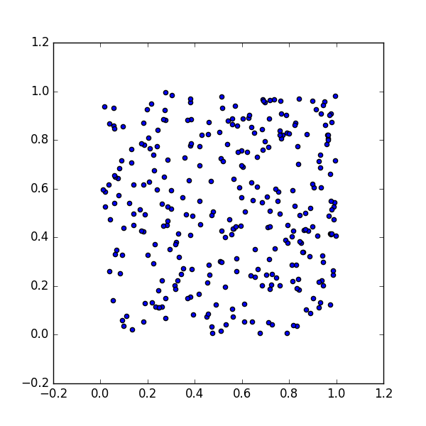
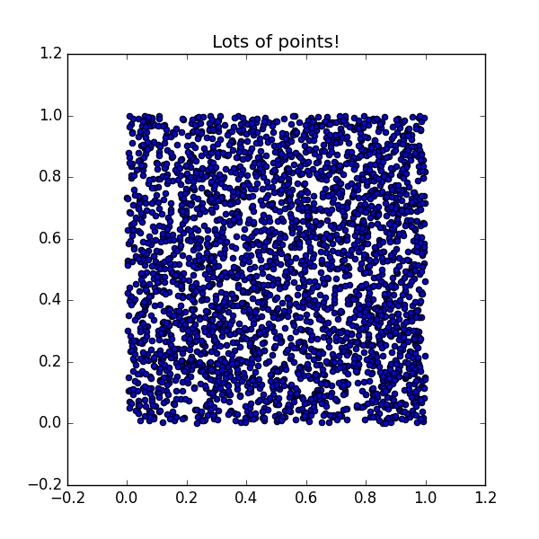
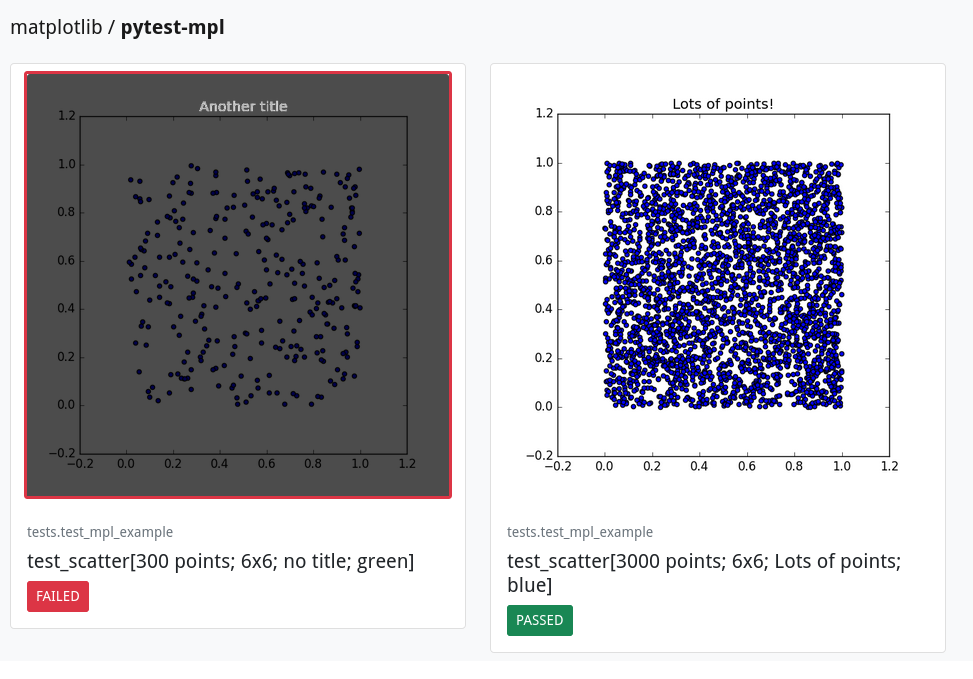
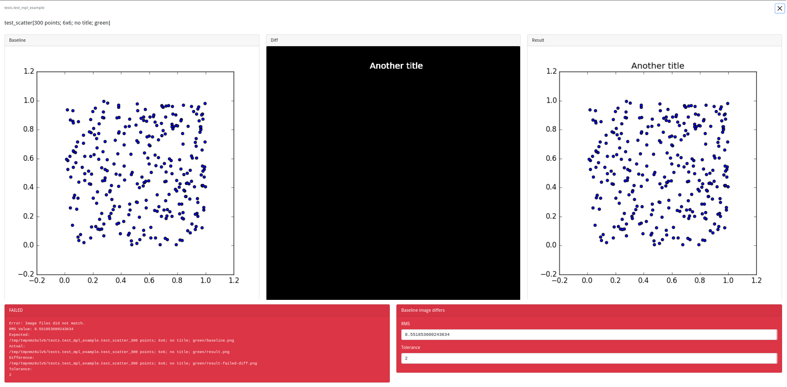
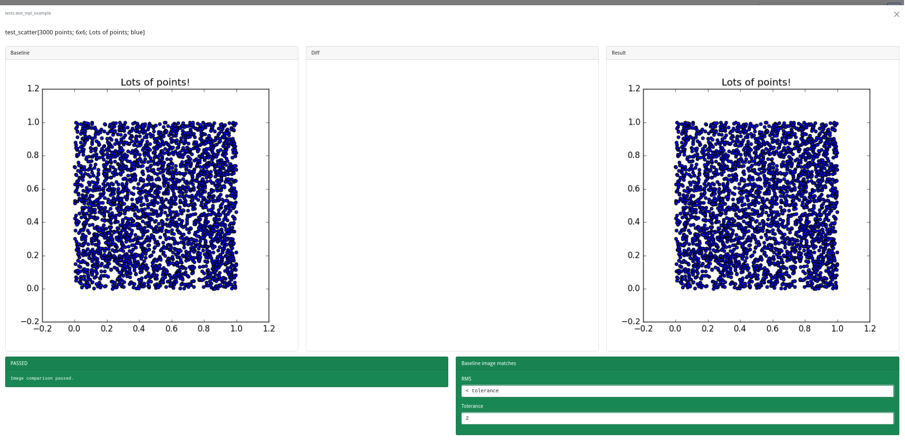

![]()
Pytest is an excellent framework for writing tests in Python. Sometimes the code you want to test will generate images using Matplotlib or related libraries based around it such as Seaborn or plotnine and ideally your pytest suite should check that your functions generate the images you expect. There is an excellent pytest plugin to help with this pytest-mpl and this post covers how to use it and a very useful feature to help you investigate differences in images when your tests of images fail.

Installation
Setup a new virtual environment, here I use virtualenvwrapper to create a temporary virtual environment (which will be deleted on deactivation) and install the pytest-mpl package (it pulls in matplotlib, pytest and a bunch of other dependencies).
mktmpenv
pip install pytest-mplFunction and Test
We need a simple example to write tests for. As with previous posts I’ve made the code available in the pytest-examples repository. You can clone this repository to follow along and play around with this worked example.
git clone git@github.com:ns-rse/pytest-examples.git
cd pytest-examplesscatter()
This repository contains the module pytestexample/mpl_example.py and the function scatter() to plot a scatter-plot of two random variables along with a few common options.
#| label: python-test
#| code-fold: true
#| code-link: true
#| code-tools: true
#| eval: false
#| echo: true
"""Example code for pytest-mpl exposition."""
import numpy as np
import numpy.typing as npt
import matplotlib.pyplot as plt
def scatter(
n_obs: int,
figsize: tuple[int, int],
title: str | None = None,
seed: int = 3513387,
) -> tuple:
"""
Generate a scatter plot of two random variables.
Parameters
----------
n_obs : int
Number of random observations to generate.
figsize : tuple[int, int]
Shape to plot.
seed : int
Seed for pseudo-random number generation.
Returns
-------
tuple(fig, ax)
"""
# Generate two random sets of numbers
rng = np.random.default_rng(seed)
x = np.random.randn(n_obs)
y = np.random.randn(n_obs)
# Create the figure
fig = plt.figure(figsize=figsize)
ax = fig.add_subplot()
ax.scatter(x, y)
plt.title(title)
return (fig, ax)Defining a test
We now need a test to check that, for a given set of inputs, the same output is always returned. Following the naming conventions used by pytest we create this at tests/test_mpl_example.py. Matplotlib provides its own image_comparison decorator from Matplotlib itself which requires at a bare minimum the baseline_image. I’m going to skip over its usage and instead introduce the pytest-mpl extension as it offers a few extra features which are really neat. Instead of using the @image_comparsion() decorator we can add the pytest-mpl package to the optional test dependencies in pyproject.toml.
[project.optional-dependencies]
tests = [
"py",
"pytest",
"pytest-cov",
"pytest-mpl",
"pytest-tmp-files",
]We use the @pytest.mark.mpl_image_compare() decorator to mark a test as having Matplotlib output to indicate that we want to compare images. We need to set the baseline_dir which is where the images against which tests will be compared are stored here it is set to baseline which is relative to the position of the file. We then call our function, in this case mpl_example.scatter() with different sets of parameters (courtesy of pytest parameterisation).
The test itself must return fig of the desired plot so that it can be compared to the reference image each time the test is run.
We also use the pytest.mark.parametrize() to setup two test scenarios.
"""Tests of the mpl_example module."""
import pytest
from pytest_examples import mpl_example
@pytest.mark.mpl_image_compare(baseline_dir="baseline")
@pytest.mark.parametrize(
("n_obs", "figsize", "title", "seed"),
[
pytest.param(300, (6, 6), "", 3513387, id="300 points; 6x6; no title"),
pytest.param(3000, (6, 6), "Lots of points!", 3513387, id="3000 points; 6x6; Lots of points"),
],
)
def test_scatter(n_obs: int, figsize: tuple[int, int], title: str, seed: int) -> None:
"""Test of the scatter() function."""
fig, _ = mpl_example.scatter(n_obs, figsize, title, seed)
return figOnce you have decorated your test you need to generate the images against which subsequent tests are to be compared to. This is done using the --mpl-generate-path= flag and providing an appropriate argument. The path is relative to where pytest is running from, in this example we use tests/baseline. We can restrict the test to the specific one we are working by specifying the path to the file and optionally the test within the file as in the below example where the path to the test file (tests/test_mpl_example.py) and the test name (test_scatter_hist) are separated by double colons (::).
mkdir -p tests/resources/img
pytest --mpl-generate-path=tests/baseline `tests/test_mpl_example.py::test_scatter`There is subtle difference between the baseline_dir parameter specified in the fixture itself (baseline) and the argument given to --mpl-generate-path= (tests/baseline).
This is because pytest searches for all files beginning with test_ in the directory tests and when running pytest you do so from the directory level above where tests resides which is typically the root of your package. Because the test files reside within the tests/ directory the relative path to the directory the parameter baseline_dir argument must omit this leading directory.
├── ./tests
├── ./tests/baseline
└── ./tests/test_mpl_example.pyThe tests are skipped “since generating image.”
❱ pytest --mpl --mpl-generate-path=baseline tests/test_mpl_example.py
======================== test session starts ==========================
platform linux -- Python 3.12.7, pytest-8.3.3, pluggy-1.5.0
Matplotlib: 3.9.2
Freetype: 2.6.1
rootdir: /mnt/work/git/hub/ns-rse/pytest-examples/main
configfile: pyproject.toml
plugins: regtest-2.1.1, anyio-4.6.0, icdiff-0.9, pylint-0.21.0, pytest_tmp_files-0.0.2, syrupy-4.7.1, mpl-0.17.0, cov-5.0.0, mock-3.14.0, xdist-3.6.1, durations-1.3.1
collected 2 items
tests/test_mpl_example.py ss [100%]
---------- coverage: platform linux, python 3.12.7-final-0 -----------
Name Stmts Miss Cover
---------------------------------------------------
pytestexamples/divide.py 16 16 0%
pytestexamples/mpl_example.py 13 0 100%
pytestexamples/shapes.py 5 5 0%
---------------------------------------------------
TOTAL 34 21 38%
======================== short test summary info =====================
SKIPPED [2] ../../../../../../../home/neil/.virtualenvs/pytest-examples/lib/python3.12/site-packages/pytest_mpl/plugin.py:925: Skipped test, since generating image.
======================== 2 skipped in 2.46s ===========================We can look at the generated images, nothing fancy just some random dots.
 
The generated images reside within the tests/baseline/ directory and as the baseline_dir=baseline argument to the @pytest.mark.mpl_image_compare() is relative to the location of the test file itself which is in test we are good to go. We can re-run the tests with the --mpl flag to check they pass.
pytest --mpl tests/test_mpl_example::test_scatter======================== test session starts ==========================
platform linux -- Python 3.12.7, pytest-8.3.3, pluggy-1.5.0
Matplotlib: 3.9.2
Freetype: 2.6.1
rootdir: /mnt/work/git/hub/ns-rse/pytest-examples/main
configfile: pyproject.toml
plugins: regtest-2.1.1, anyio-4.6.0, icdiff-0.9, pylint-0.21.0, pytest_tmp_files-0.0.2, syrupy-4.7.1, mpl-0.17.0, cov-5.0.0, mock-3.14.0, xdist-3.6.1, durations-1.3.1
collected 2 items
tests/test_mpl_example.py .. [100%]
---------- coverage: platform linux, python 3.12.7-final-0 -----------
Name Stmts Miss Cover
---------------------------------------------------
pytestexamples/divide.py 16 16 0%
pytestexamples/mpl_example.py 13 0 100%
pytestexamples/shapes.py 5 5 0%
---------------------------------------------------
TOTAL 34 21 38%
=========================== 2 passed in 2.56s ===========================Update pytest options
We don’t want to have to remember to use the --mpl flag each time we run the test and we also want to make sure its used in Continuous Integration. This can be achieved by adding the --mpl flag to the pytest options that are defined in pyproject.toml.
[tool.pytest.ini_options]
...
addopts = ["--cov", "--mpl", "-ra", "--showlocals", "--strict-config", "--strict-markers"]
...Don’t forget to stage and commit these changes to your repository.
Now each time you run your test suite the output of calling the test is compared to the reference images that reside under tests/baseline/ (or whatever directory you specified).
Failing tests
Sometimes your tests might fail. To demonstrate this we change one of the title parameters in the tests to Another title in tests/test_mpl_example.py and re-run the tests, sure enough the test fails. We are told the RMS Value (the Root Mean Square difference value) along with the location of the test files of which there are three images, a copy of the baseline, the result and a difference between the two.
❱ pytest --mpl tests/test_mpl_example.py
========================== test session starts =======================
platform linux -- Python 3.12.7, pytest-8.3.3, pluggy-1.5.0
Matplotlib: 3.9.2
Freetype: 2.6.1
rootdir: /mnt/work/git/hub/ns-rse/pytest-examples/main
configfile: pyproject.toml
plugins: regtest-2.1.1, anyio-4.6.0, icdiff-0.9, pylint-0.21.0, pytest_tmp_files-0.0.2, syrupy-4.7.1, mpl-0.17.0, cov-5.0.0, mock-3.14.0, xdist-3.6.1, durations-1.3.1
collected 2 items
tests/test_mpl_example.py F. [100%]
========================== FAILURES ==================================
________________ test_scatter[300 points; 6x6; no title] ______
Error: Image files did not match.
RMS Value: 8.551853600243634
Expected:
/tmp/tmpn9ucgc47/tests.test_mpl_example.test_scatter_300 points; 6x6; no title/baseline.png
Actual:
/tmp/tmpn9ucgc47/tests.test_mpl_example.test_scatter_300 points; 6x6; no title/result.png
Difference:
/tmp/tmpn9ucgc47/tests.test_mpl_example.test_scatter_300 points; 6x6; no title/result-failed-diff.png
Tolerance:
2
---------- coverage: platform linux, python 3.12.7-final-0 -----------
Name Stmts Miss Cover
---------------------------------------------------
pytestexamples/divide.py 16 16 0%
pytestexamples/mpl_example.py 13 0 100%
pytestexamples/shapes.py 5 5 0%
---------------------------------------------------
TOTAL 34 21 38%
========================== short test summary info ======================
FAILED tests/test_mpl_example.py::test_scatter[300 points; 6x6; no title] - Failed: Error: Image files did not match.
========================== 1 failed, 1 passed in 2.45s ==================Navigating to and viewing these files is pretty easy when there is only one test that has failed but when more than one test fails they are all in their own directory and navigating and viewing them takes a bit longer.
--mpl-generate-summary
This is where the --mpl-generate-summary option comes in really handy as it will generate a report of the differences in either html, json or basic-html. Here I’ll show the use of the html option and what it produces.
By default the report is created under /tmp/ but with the --mpl-results-path you can specify a location relative to where the tests are being run from. You do not need to create the directory/path it will be created for you. That said I’m not that bothered about keeping the test image comparisons though so I typically omit the --mpl-generate-path option and instead the output and use the /tmp/ directory, that way my project directory doesn’t get cluttered with files as this is wiped when the computer is rebooted.
If you do use --mpl-results-path to specify a nested directory within your repository you would probably want to exclude it from being included in version control though so add the path to .gitignore.
Remember we have added the --mpl flag to the general tool.pytest.ini_options in pyproject.toml to ensure pytest-mpl extension is enabled and run.
Lets run the tests, which we know will fail, with the --mpl-generate-summary=html option enabled (and not using --mpl-results-path) .
pytest --mpl-generate-summary=html tests/test_mpl_example.pyThe output is virtually identical but there is an additional line at the end…
❱ pytest --mpl --mpl-generate-summary=html tests/test_mpl_example.py
========================== test session starts =======================
platform linux -- Python 3.12.7, pytest-8.3.3, pluggy-1.5.0
Matplotlib: 3.9.2
Freetype: 2.6.1
rootdir: /mnt/work/git/hub/ns-rse/pytest-examples/main
configfile: pyproject.toml
plugins: regtest-2.1.1, anyio-4.6.0, icdiff-0.9, pylint-0.21.0, pytest_tmp_files-0.0.2, syrupy-4.7.1, mpl-0.17.0, cov-5.0.0, mock-3.14.0, xdist-3.6.1, durations-1.3.1
collected 2 items
tests/test_mpl_example.py F. [100%]
========================== FAILURES ==================================
_________________ test_scatter[300 points; 6x6; no title; green] _____
Error: Image files did not match.
RMS Value: 8.551853600243634
Expected:
/tmp/tmp1bzvguuq/tests.test_mpl_example.test_scatter_300 points; 6x6; no title; green/baseline.png
Actual:
/tmp/tmp1bzvguuq/tests.test_mpl_example.test_scatter_300 points; 6x6; no title; green/result.png
Difference:
/tmp/tmp1bzvguuq/tests.test_mpl_example.test_scatter_300 points; 6x6; no title; green/result-failed-diff.png
Tolerance:
2
---------- coverage: platform linux, python 3.12.7-final-0 -----------
Name Stmts Miss Cover
---------------------------------------------------
pytestexamples/divide.py 16 16 0%
pytestexamples/mpl_example.py 13 0 100%
pytestexamples/shapes.py 5 5 0%
---------------------------------------------------
TOTAL 34 21 38%
========================== short test summary info ======================
FAILED tests/test_mpl_example.py::test_scatter[300 points; 6x6; no title; green] - Failed: Error: Image files did not match.
========================== 1 failed, 1 passed in 2.50s ==================
A summary of test results can be found at: /tmp/tmp1bzvguuq/fig_comparison.htmlIf we open the test results in our browser we have a nice summary of the tests that have passed and failed.

pytest --mpl-generate-summary=htmlIf we want to look at a specific failed test we can, on the left we see the baseline image, on the right the test image and in-between a plot showing the differences between the two. We also have the “Root Mean Square Error” reported for the test.

pytest --mpl-generate-summary=html
pytest --mpl-generate-summary=htmlConclusion
If your package produces plots its easy to write tests that check they are correctly generated using the pytest-mpl extension and there is a neat convenience option to generate summaries of tests to make viewing the failures and differences in your browser convenient.
Key Points
- You have to generate reference images against which the tests are run.
- You should add the
--mploption to thetools.pytest.ini_optionssection of yourpyproject.tomlunderaddoptsto ensure the extension is used whenever tests are run, be that locally or in Continuous Integration. - If you find tests are failing you can easily generate a web-page summarising the passes and failures using the
--mpl-generate-summary=htmlflag when invokingpytestto get an HTML summary that is easy to navigate.
Reuse
Citation
@online{shephard2024,
author = {Shephard, Neil},
title = {Pytest {Matplotlib}},
date = {2024-09-24},
url = {https://blog.nshephard.dev/posts/pytest-mpl/},
langid = {en}
}